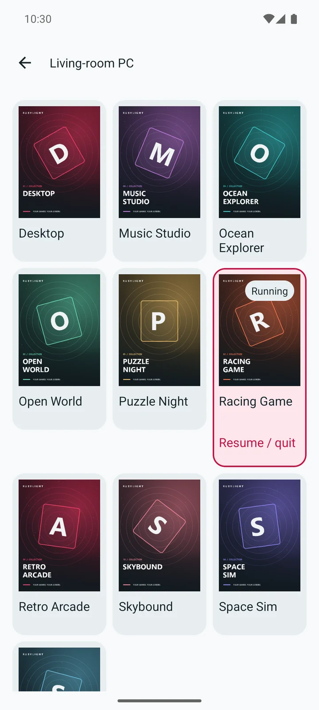
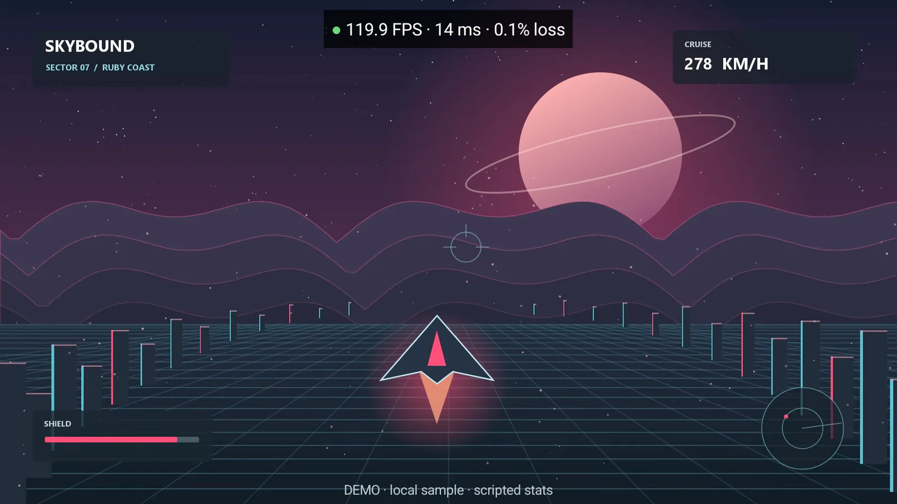
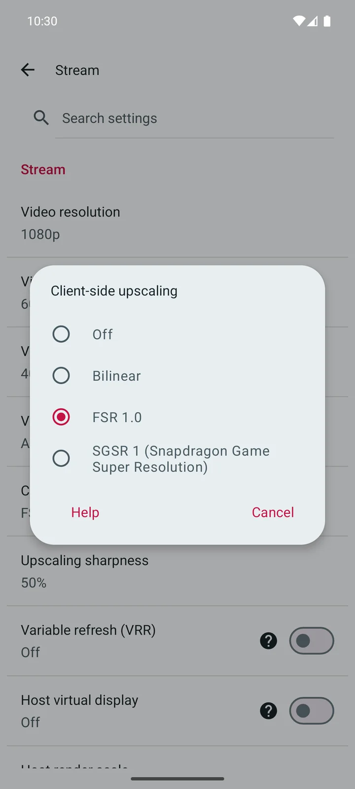
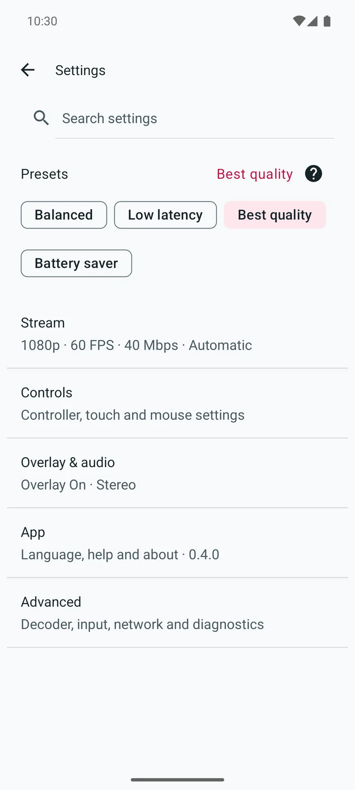
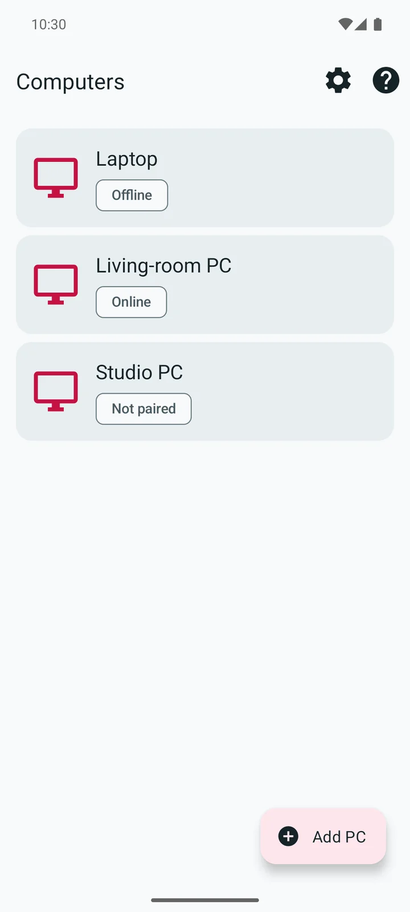

Ultra-low latency
A short path from input to action. Fast decoding keeps you in the game.
Immediate response
Stream your PC to Android.
Your games, your desktop, your controls. RUBYLIGHT brings them all to your screen.
Android 5.0+ · Free and open source

The RUBYLIGHT host runs your games and apps.
Video and audio travel to your Android device.
Your input goes straight back to your PC.
From your first input to the next frame. Built for a stream that feels immediate.
A short path from input to action. Fast decoding keeps you in the game.
Immediate response
AV1, HEVC and H.264. Bring contrast and depth to your stream with 10-bit HDR over AV1 and HEVC.
AV1 · HEVC · H.264
Variable refresh rate (VRR) pacing follows the game. RUBYLIGHT presents each frame as it arrives.
VRR pacing
Client-side upscaling with FSR and Snapdragon GSR brings your stream up to size, right on Android.
FSR · Snapdragon GSR



Pick up your controller. Reach for the touchscreen. Or keep your mouse and keyboard.
Connect USB and Bluetooth controllers. Remap buttons to fit the way you play.
Switch between direct touch and trackpad input. Use a mouse and keyboard for your desktop.
See FPS, latency and frame loss in the performance overlay. Open diagnostics and choose when to share a report.
Local discovery finds your host. Wake-on-LAN brings your PC online for your next stream.
Video and audio to you. Your controls back to your PC.
One PC. One Android device. Your RUBYLIGHT host.
Get the APK from the latest release. Open it on Android and allow installation.
Install the RUBYLIGHT host on your PC. Connect your PC and Android device to the same network.
Select your PC in the app, or use “Add PC”. Enter the displayed PIN under “Devices” in the host web console. Grant app-list, stream, launch and input permissions.
Choose a game or your desktop. Set your picture and controls, then start your stream.
